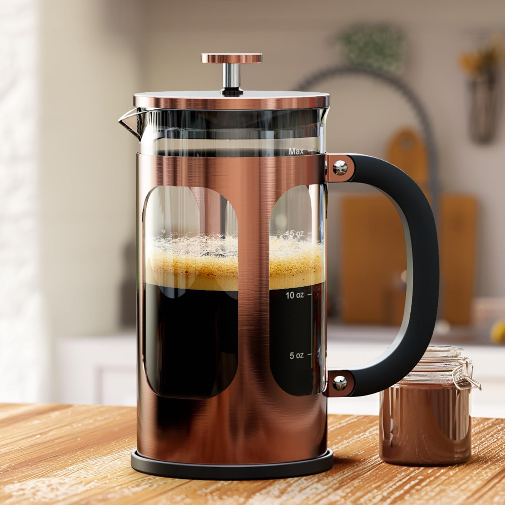
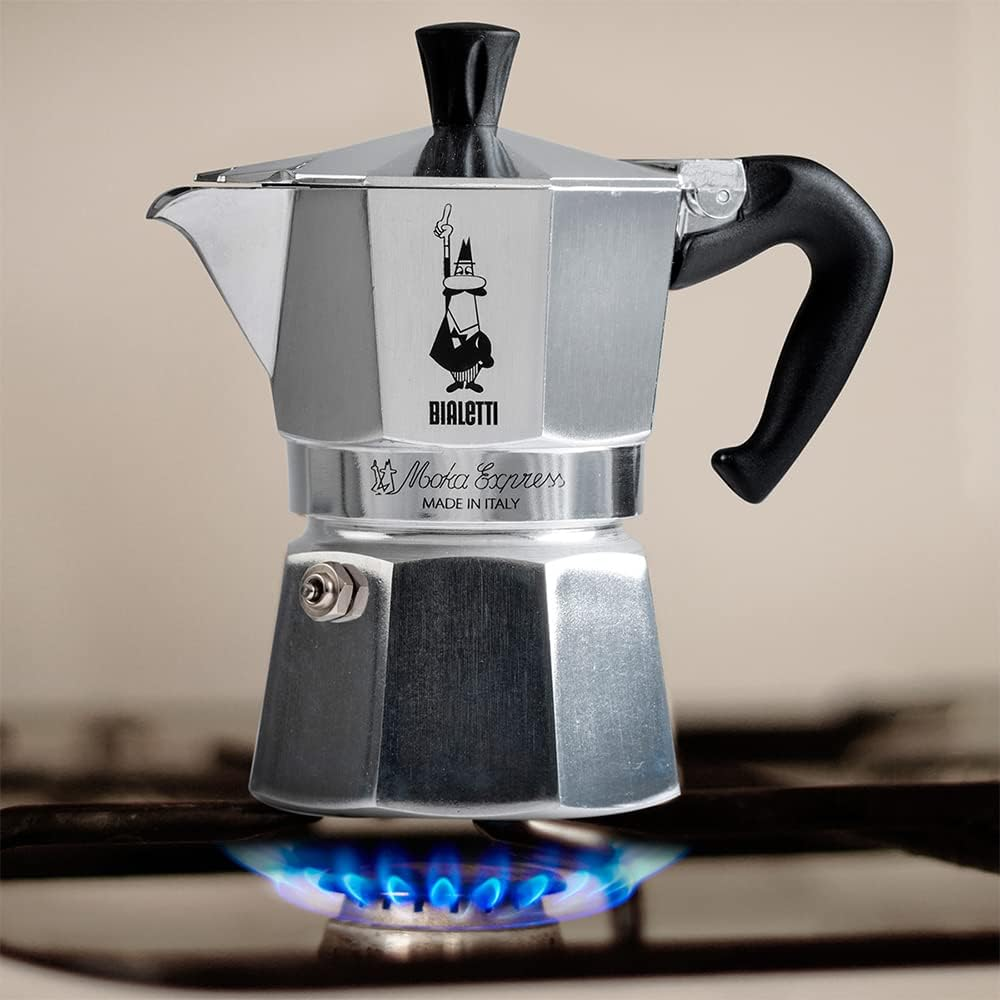
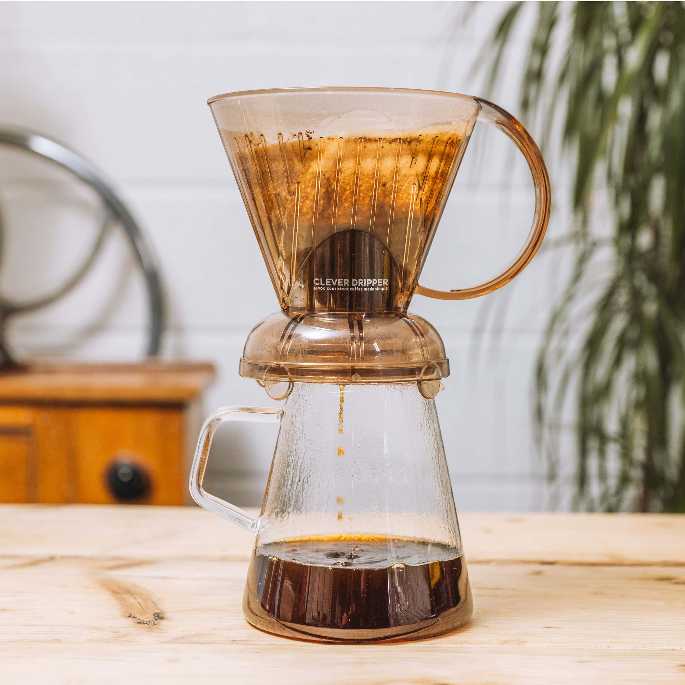
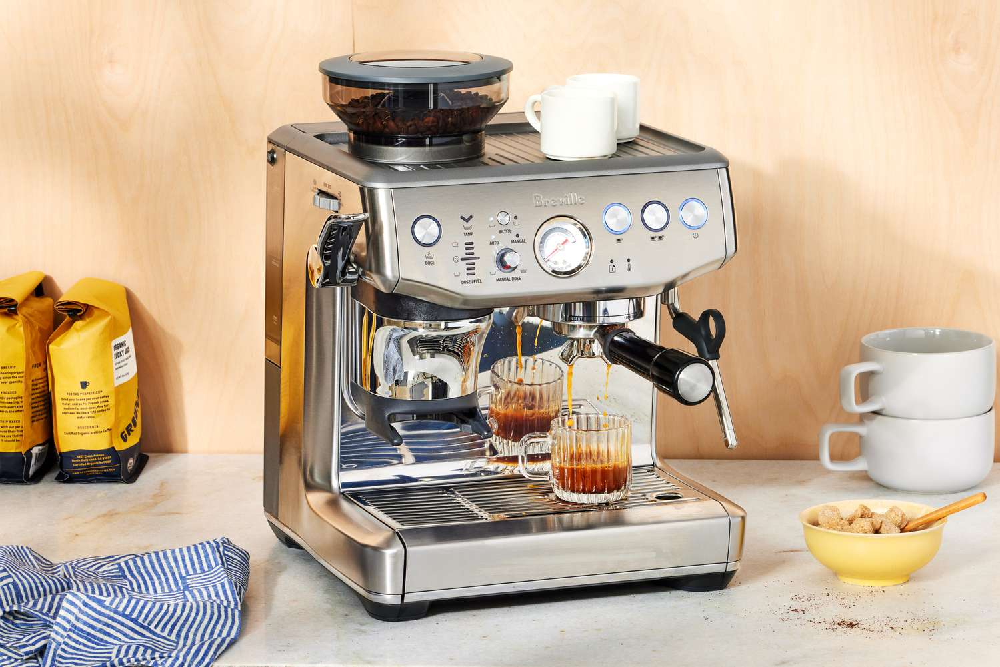
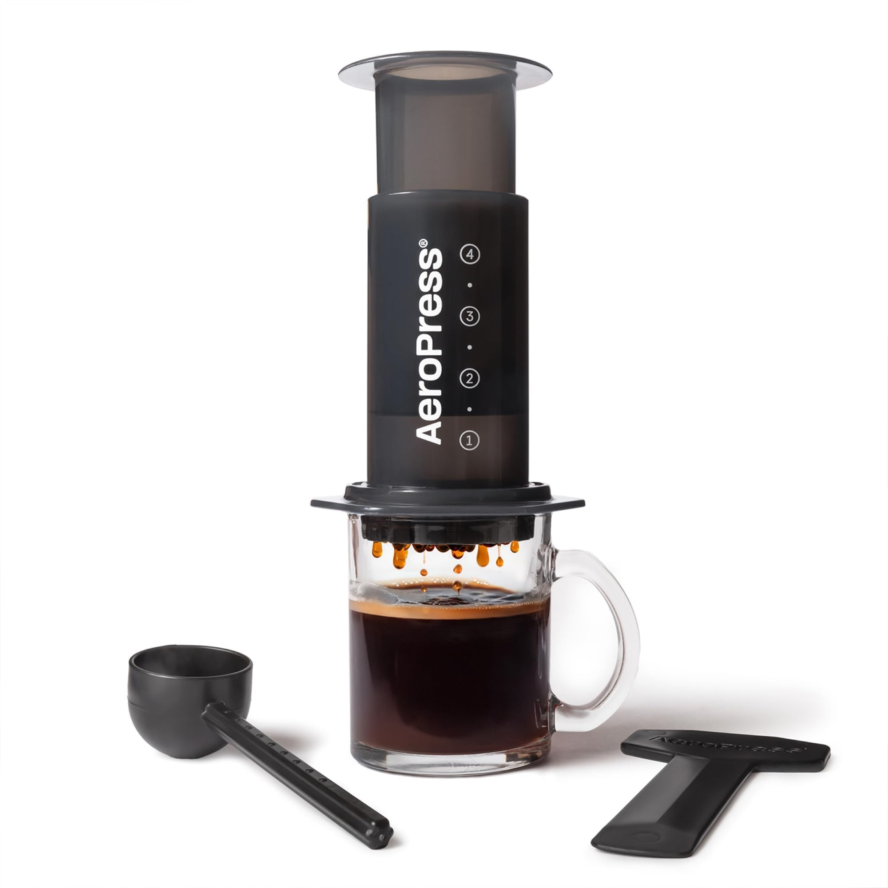
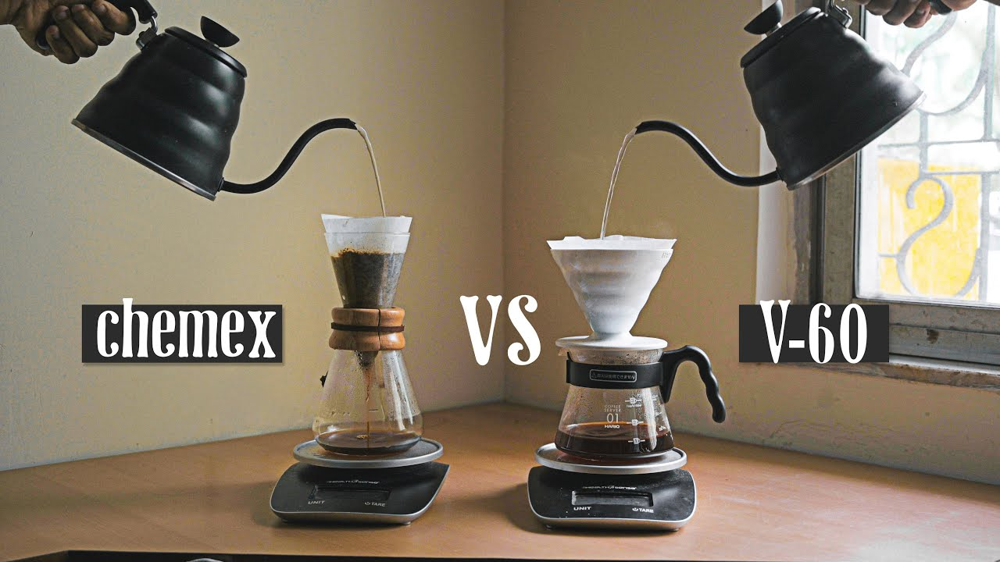
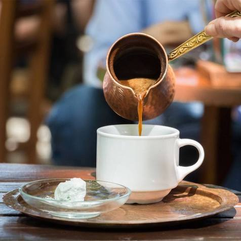
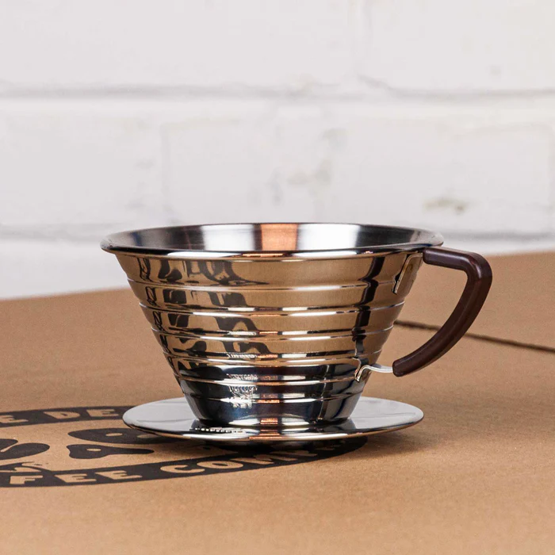

French Press
The French Press, or press pot, is a classic method that steeps
coarse coffee grounds in hot water before pressing them down with
a plunger. This produces a bold, heavy-bodied cup that highlights
the coffee’s natural oils and textures.

Moka Pot
The Moka Pot, often called a stovetop espresso maker, brews
strong, rich coffee using steam pressure. Originating in Italy, it
produces a concentrated brew similar to espresso, perfect for
making lattes and cappuccinos at home.

Clever Dripper
The Clever Dripper combines the best features of immersion and
pour-over brewing. It allows coffee grounds to steep fully before
releasing the brew through a filter, ensuring a clean yet
full-bodied flavor. It’s simple to use and ideal for beginners.

Espresso Machine
An espresso machine forces hot water through finely ground coffee
at high pressure, producing a rich, concentrated shot topped with
crema. It’s the foundation for popular drinks like cappuccinos,
lattes, and macchiatos, offering intense flavor in a small cup.

Aeropress
The AeroPress is a modern brewing device known for its speed and
versatility. It uses air pressure to push hot water through coffee
grounds, resulting in a smooth, rich cup with low bitterness. It’s
lightweight, easy to clean, and popular among travelers and coffee
enthusiasts alike.

Pour Over (V60, Chemex)
Pour-over methods like the Hario V60 and Chemex emphasize
precision and clarity. Hot water is poured slowly over coffee
grounds in a filter, allowing full control over extraction. The
result is a clean, aromatic cup that highlights delicate flavor
notes.

Cezve
The cezve, also known as an ibrik, is a traditional pot used for
brewing Turkish coffee. Finely ground coffee is simmered with
water (and often sugar) over low heat, creating a thick, foamy
brew served unfiltered in small cups.

Kalita Wave
The Kalita Wave is a pour-over coffee dripper with a unique
wave-shaped filter. It allows for precise control over water flow
and extraction, resulting in a clean, bright cup with balanced
acidity and full body.
